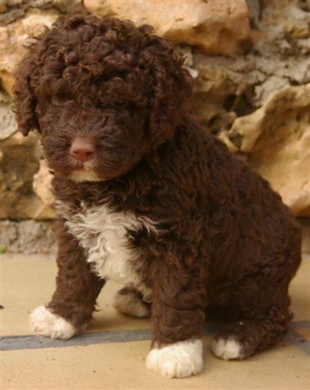
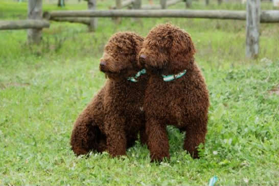
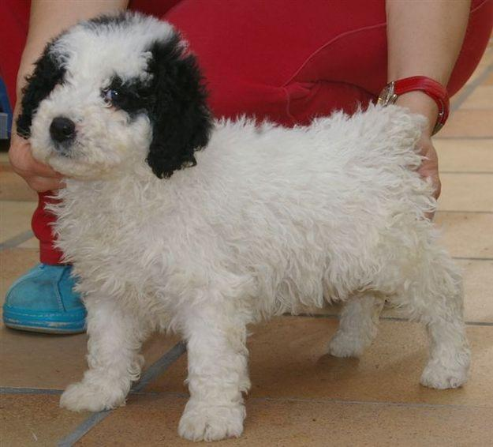

| RAZA PERRO DE AGUA ESPAÑOL |  |
| Origen: Español Aptitudes particulares: Perro de salvamento de agua y caza Esperanza de vida: - Talla del macho: 44 - 50 cm. aprox. Peso del macho: 18 - 22 kg aprox. Talla de la hembra: 40 - 46 cm.aprox. Peso de la hembra: 14 - 18 kg aprox. |
Origen e historia de la raza
El Perro de Agua Español es autóctono de las regiones del sur de Andalucía. Fue utilizado como perro de caza y auxiliar de pesca desde sus orígenes. Pero, según algunas teorías, llegó a España con los conquistadores árabes al principio de la Edad Media, al mismo tiempo que el cordero merinos. Este perro también es conocido con el sobrenombre de "Turco", al parecer debido a los pastores de origen magrebí que los llevaban con los rebaños.
|  |  |